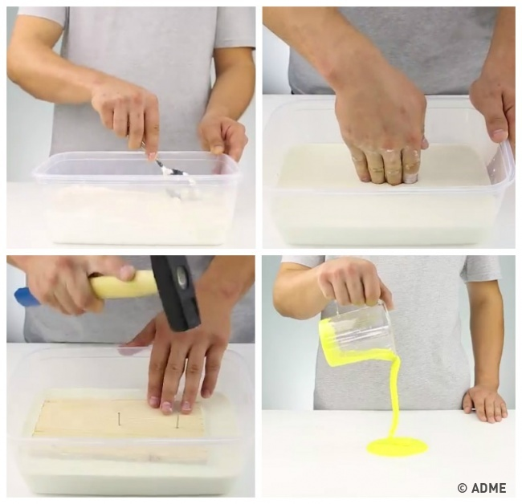

16 опытов, которые сделают детство незабываемым
Мы каждый день заботимся о наших детях — варим им кашу по утрам и гладим одежду. Но через 20 лет им вспомнятся не наши домашние хлопоты, а моменты, проведенные вместе.
AdMe.ru собрал 16 опытов, которые оторвут от дел взрослых и увлекут детей. Для них не нужно много времени и какая-то особая подготовка, а удовольствия будет море. А потом можно и кашу сварить. Вместе.
Твердая жидкость
Вам понадобятся:
- крахмал
- вода
- пластиковый контейнер
- пищевой краситель, доска, молоток и гвозди для дополнительных экспериментов
Перемешайте в контейнере воду и крахмал до сметанообразной консистенции. Получится «неньютоновская» жидкость. Вы можете легко погрузить в нее пальцы, но если вы ударите по поверхности кулаком, то почувствуете, что она твердая. Положите на поверхность жидкости доску, и вы легко вобьете гвоздь, но стоит утопить один ее уголок в жидкости, как доска легко погрузится на дно. При желании «твердую жидкость» можно окрасить пищевыми красителями.